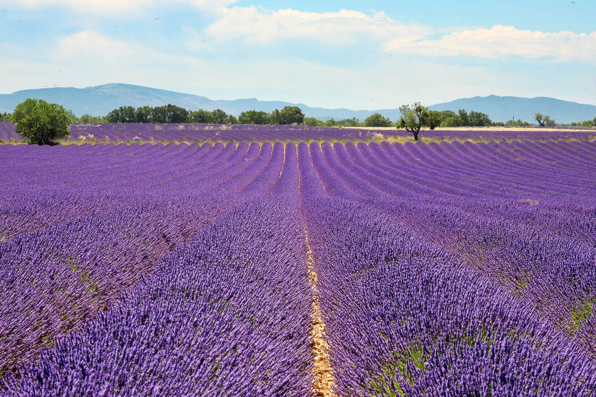

Op ongeveer 1u10 van Les Cabritas voelt de streek van de Baronnies, tussen de uitlopers van de Préalpes en de Mont Ventoux, al helemaal als de Provence, ook al hoort ze bij de Drôme. Nyons en Buis-les-Baronnies zijn er de twee onmisbare tussenstops.

Nyons, de hoofdstad van de olijf
Nyons staat bekend om zijn romaanse brug en zijn olijfgaarden: hier groeit de beroemde zwarte olijf van Nyons, met een beschermde oorsprongsbenaming, van het ras Tanche, die een zachte, geurige olie oplevert. Oliemolens, kleurrijke markten en zonnige straatjes bepalen de uitgesproken Provençaalse sfeer van de stad.
Buis-les-Baronnies, een middeleeuwse markt en de geur van lindebloesem
Iets verderop betovert Buis-les-Baronnies bezoekers met zijn schilderachtige karakter en rijke historische erfgoed: het marktplein met arcaden uit de 14e eeuw, het dominicanenklooster, de oude romaanse brug over de Ouvèze, een olijfoliemolen en een geurentuin. Sinds de 19e eeuw is lindebloesem de specialiteit van het dorp, naast tijm, salie, bonenkruid en lavendel van lokale telers.
Goed om te weten voor uw bezoek
Plan uw bezoek op een marktdag om ten volle van de Provençaalse sfeer te genieten. De weg door de streek, slingerend tussen olijfgaarden en lavendelvelden, is op zich al de omweg waard, met tal van plekken voor foto's. De streek is ook erg geliefd om te fietsen, te wandelen en te paragliden.
Praktische informatie vanuit Les Cabritas
- Afstand vanaf Flaviac: ongeveer 1u10 rijden
- Beste periode: lente tot herfst, de lavendel bloeit in de zomer
- Ideaal voor: Provençaalse markten, lekker eten, wandelen, fietsen
Zin om de Provençaalse Drôme, Nyons en Buis-les-Baronnies, te ontdekken vanuit uw vakantiehuis in de Ardèche?
Les Cabritas verwelkomt u in Flaviac, in het hart van de Ardèche, voor een comfortabel verblijf met privézwembad, vlak bij de mooiste plekken van de streek.
Beschikbaarheid bekijken